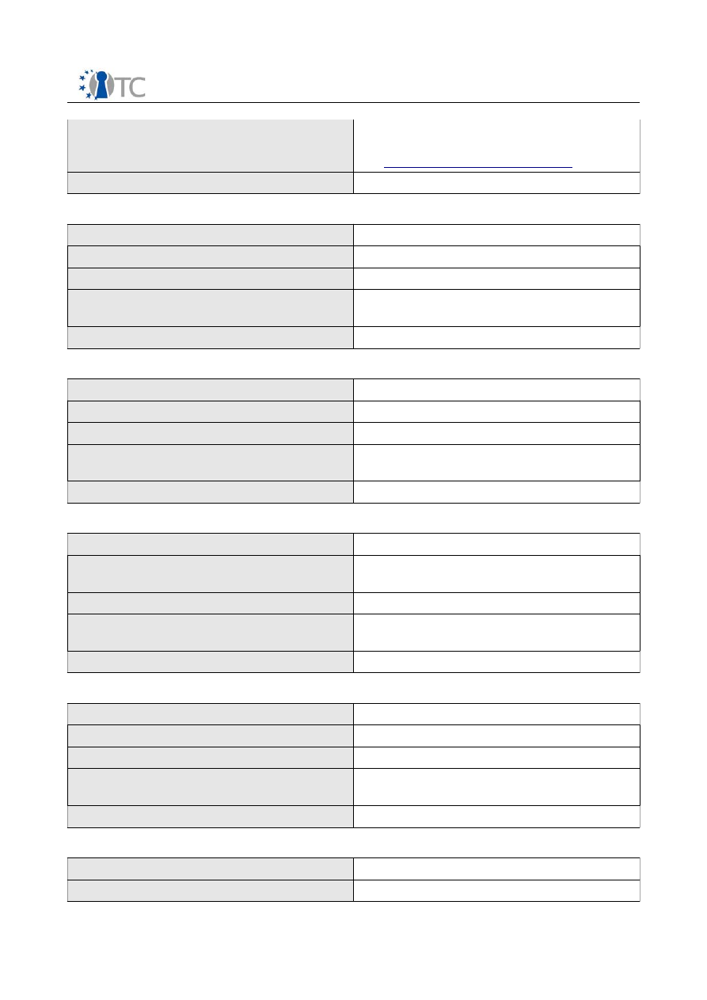
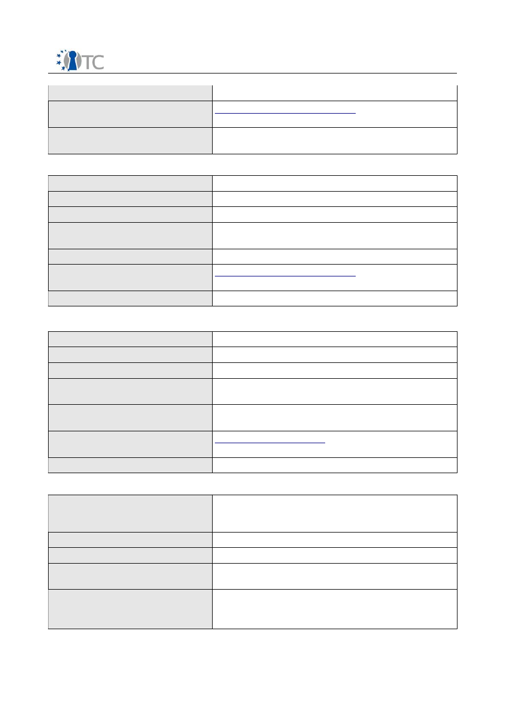
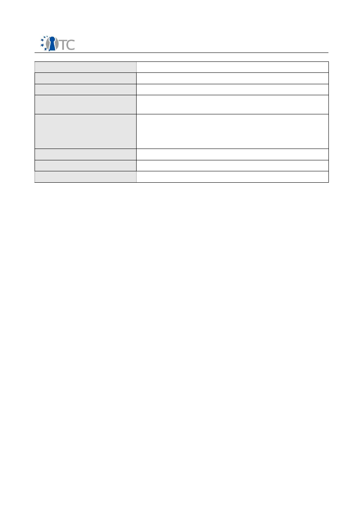

D10.1 Intermediate report about all external
cooperation and activities
Project number
IST-027635
Project acronym
OpenTC
Project title
Open Trusted Computing
Deliverable type
Report
Deliverable reference number
IST-027635/D10.1/FINAL
Deliverable title
Intermediate report about all external
cooperation and activities
WP contributing to the deliverable
WP10
Due date
Apr 2006 - M06
Actual submission date
Jun 12 2006
Responsible Organisation
RHUL
Authors
RHUL (Stéphane Lo Presti, Chris Mitchell),
TEC (Angelika Holzweber)
Abstract
This deliverable summarises the external
cooperation and activities undertaken by the
OpenTC partners during the first six months
of the project, and planned for the remainder
of the project.
Keywords
external cooperation, external activities
Dissemination level
Public
Revision
FINAL
Instrument
IP
Start date of the
project
1
st
November 2005
Thematic Priority
IST
Duration
42 months

FINAL
If you need further information, please visit our website
www.opentc.net
or contact
the coordinator:
Technikon Forschungs-und Planungsgesellschaft mbH
Richard-Wagner-Strasse 7, 9500 Villach, AUSTRIA
Tel.+43 4242 23355 –0
Fax. +43 4242 23355 –77
Email
coordination@opentc.net
The information in this document is provided “as is”, and no guarantee
or warranty is given that the information is fit for any particular purpose.
The user thereof uses the information at its sole risk and liability.
OpenTC Deliverable 10.1
2

FINAL
Table of Contents
1 Introduction ..............................................................................................................4
1.1 Technikon's coordination task................................................................................4
1.2 Structure of this document.....................................................................................4
1.3 Conferences or public discussions and talks..........................................................4
1.3.1 Active role (speaker, presenter, moderator)......................................................5
1.3.2 Passive role (attendee)......................................................................................5
1.4 Articles in journals and magazines, papers, electronic publications.......................5
1.5 Cooperation with external organisations................................................................5
2 Dissemination activities in the first six months..........................................................6
2.1 Conferences or public discussions and talks..........................................................6
2.1.1 Active role (speaker, presenter, moderator)......................................................6
2.1.2 Passive role (attendee)....................................................................................11
2.2 Articles in journals and magazines, papers, electronic publications.....................11
2.3 Cooperation with external organisations..............................................................14
3 Participation in other projects..................................................................................19
3.1 Participation in running/labelled complementary EU/IST projects, Eureka...........19
3.2 Participation in national projects..........................................................................21
4 Planned dissemination activities..............................................................................23
4.1 Partners' plans for dissemination.........................................................................23
4.2 Conferences or public discussions/talks...............................................................24
4.2.1 Active role (speaker, presenter, moderator)....................................................24
4.2.2 Passive role (attendee)....................................................................................28
4.3 Articles in journals and magazines, papers, electronic publications.....................29
4.4 Cooperations with external organisations............................................................31
5 List of Abbreviations ...............................................................................................33
OpenTC Deliverable 10.1
3
FINAL
1
Introduction
The ambitious goals and the critical role of the OpenTC project makes cooperation
with external bodies and organisations, and participation in public and scientific
events, essential in order to ensure its success. The following cooperation activities
have been identified:
•
Interaction with and contribution to standardisation bodies to help in the
establishment of new standards;
•
Dissemination of project activities and the innovative solutions developed within the
project to expert and non-expert audiences;
•
Development of training concepts and materials to ensure direct know-how transfer
to the users;
•
Organisation and maintenance of an informed dialogue about the benefits and
drawbacks of Trusted Computing (TC), and the OpenTC approach in particular, and of
its applications such as DRM, with stakeholders, a variety of different user groups, and
citizens.
1.1 Technikon's coordination task
Technikon, as the coordinator of the project, has performed a wide variety of
dissemination activities during the first six months. Technikon prepared the official
press release for the OpenTC project, correlate it with all partners and published it on
the project website. Furthermore Technikon set up the public project website
(
www.opentc.net
), including a secured internal section to facilitate cooperation and
communication. The project website has been designed to be easily accessible and
give an introduction to the project. It provides information for interested visitors and
can also be used for project-internal communication and cooperation. Technikon has
also provided templates for presentations made by the partners as well as a general
presentation about the OpenTC project which can be used by all the partners.
Technikon personnel also established links with the newly labelled Medea+ project
Trusted Secure Computing (TSC, Label number 2A502), and have participated as the
OpenTC liaison in the first TSC correlation meeting in Paris in January 2006.
1.2 Structure of this document
Section 2 of Deliverable D10.1 lists the dissemination activities undertaken by the
OpenTC partners during the first six months of the project. A review of collaboration
with other projects is provided in Section 3, and collaborations planned for the
remainder of the project are given in Section 4. Section 5 gives a list of abbreviated
partner names, used throughout this document.
The various activities have been divided into four groups and each activity is
described in the form of a table. The tables used for each group are described in the
subsequent sections.
1.3 Conferences or public discussions and talks
Two types of tables are used to describe involvement in conferences and other fora.
One is used where a member of the project team is actively involved (e.g. providing a
talk, participating in a panel session, etc.), and is presented in Section 1.3.1. The other
type is where the team member is taking a more passive role (e.g. as an attender),
presented in Section 1.3.2.
OpenTC Deliverable 10.1
4
FINAL
1.3.1 Active role (speaker, presenter, moderator)
Name of the event
<official name>
Date
Place
<Name and country>
Organisation and number of
participants
<short name, number of participants>
Content of presentation/talk
<short abstract>
Hyperlink to conference
website
Outcome
<press release, cooperation etc.>
1.3.2 Passive role (attendee)
Name of the event
<official name>
Date
Place
<Name and country>
Partner
<short name>
1.4 Articles in journals and magazines, papers, electronic publications
The following form is used to report publications by members of the project team.
Date
Name
Spread
<regional, national, international>
Content
<interview about..., official OTC press
release, press release about...>
Partner
<short name>
1.5 Cooperation with external organisations
The following form is used to report collaborations with external organisations.
Workpackages
OpenTC partner
External organisation(s)
Type of activity, date and
duration
< meeting, workshop >
Objectives
Resources
Actions
Outcome
OpenTC Deliverable 10.1
5
FINAL
2
Dissemination activities in the first six months
Following the categorisation presented in section 1, we list hereafter the dissemination
activities undertaken by the project partners during the first six months of the project.
2.1 Conferences or public discussions and talks
Public presentations given by partners of the OpenTC are described below.
2.1.1 Active role (speaker, presenter, moderator)
Name of the event
Free Software and Open Source Days
Date
09/02/2006
Place
Bigli University, Turkey
Organisation and number of
participants
PORT (Bora Güngören)
Content of presentation/talk
This 1-hour presentation was given in Turkish and
discussed issues of privacy and anonymity, with
details on Direct Anonymous Attestation and
Enforcable Policies. Questions were asked mainly
about TPM-based user identification, and roots of
trust.
Bilgi University "Free Days" is one of the two
largest open source events in Turkey. It hosts
international contributions and this year's invited
guests were Ian Murdock (founder of Debian Linux
distribution) and Branden Robinson (current
Debian project leader).
Hyperlink to conference
website
http://open.bilgi.edu.tr/freedays/program.php?lang
=en
Official photos from the event can be seen at:
http://open.bilgi.edu.tr/freedays/photos/album0/
Outcome
Raised awareness about Trusted Computed and
corrected misconceptions about TC and DRM in
the Turkish Open Source community
Name of the event
Computer Center Executives Conference
Date
06-09/04/2006
Place
Antalya, Turkey
Organisation and number of
participants
TUB (Görkem Çetin)
Content of presentation/talk
A 20 minute seminar about 3 promising and
upcoming new technologies, including Trusted
Computing and Linux
OpenTC Deliverable 10.1
6
FINAL
Hyperlink to conference
website
http://bimy.tbd.org.tr
Outcome
Awareness of OpenTC among business partners
(including Microsoft, Fujitsu-Siemens, IBM and
Oracle), attendance was around 400 people
Name of the event
Workshop “Fostering a European academic
research environment for Trusted Computing”
organised by the British CESG and German BSI
Date
20-21/02/2006
Place
Bonn, Germany
Organisation and number of
participants
RHUL, RUB, TUD, HP, CUCL, 9 people
Content of presentation/talk
HP took part in the organisation of the workshop,
while presentations were given by RHUL (Using
mobile devices in a secure environment), RUB (A
Security Architecture for Enforcement and Transfer
of Licenses) and CUCL (The Xen Project)
Hyperlink to conference
website
Outcome
Knowledge of the public sector requirements
regarding TC, dissemination of OpenTC work,
participation in a European working group on TC
First European summer school on Trusted
Infrastructure technologies in Oxford (see Section
4.4)
Name of the event
1
st
Workshop on the Advance in Trusted
Computing
Date
09/03/2006
Place
Tokyo, Japan
Organisation and number of
participants
IBM (Matthias Schunter)
Content of presentation/talk
Trusted Computing and Open TC
Hyperlink to conference
website
http://www.research.ibm.com/trl/news/workshop/in
dex_en.html
Outcome
Both projects aim at Open Source trusted
computing solutions. As a consequence, we
agreed that we will try to set up a closer
collaboration. We plan to exchange technical
specifications and we have issued an invitation to
OpenTC Deliverable 10.1
7
FINAL
the Japanese researchers to join our September
general assembly
Name of the event
Infosecurity Europe
Date
26/04/2006
Place
London, UK
Organisation and number of
participants
HP (1)
Content of presentation/talk
Open Trusted Computing
Hyperlink to conference
website
http://www.infosec.co.uk
Outcome
Conference for information security professionals
Name of the event
Linux Users Association, Internet Association
Date
09-11/02/2006
Place
Pamukkale University, Turkey
Organisation and number of
participants
PORT (Bora Güngören)
Content of presentation/talk
1-hour presentation (in Turkish) on Trusted
Computing and Linux.
The Academic Computing Conference is one of the
major academic IT events in Turkey. It is not
dominated by product presentations but by
universities.
Hyperlink to conference
website
http://ab.org.tr/ab06/
Outcome
Awareness of Trusted Computing and OpenTC
among external entities, around 50-60 people
mainly from government offices and universities
Name of the event
Linux Users Association
Date
08/04/06
Place
Yeditepe University, Turkey
Organisation and number of
participants
PORT (Bora Güngören)
Content of presentation/talk
This 1-hour presentation was given (in Turkish) on
how security products would evolve to make
OpenTC Deliverable 10.1
8
FINAL
further use of TC in their design and
implementation.
Hyperlink to conference
website
http://open.yuenc.org/
Outcome
Awareness of OpenTC among external entities,
around 30 people, mostly open source developers,
Linux based firms (UEKAE, Gelecek, Novell Turkey,
IBM Turkey, Armador OS) and computer science
students
Name of the event
Informatik Kolloquium
Date
11/11/2005
Place
Koblenz University, Germany
Organisation and number of
participants
TUD (1)
Content of presentation/talk
Overview of the Nizza Security Architecture
Hyperlink to conference
website
http://www.uni-koblenz.de/ifi/kolloquium/
Outcome
Name of the event
CollaborateCom
Date
19-21/12/2005
Place
San Jose, USA
Organisation and number of
participants
TUD (1)
Content of presentation/talk
Presented the paper “The Nizza Security
Architecture”
Hyperlink to conference
website
http://www.collaboratecom.org/2005/
Outcome
Name of the event
EuroSys
Date
18-21/04/2006
Place
Leuven, Belgium
Organisation and number of
participants
TUD (3)
Content of presentation/talk
Presented the paper “Reducing TCB Complexity for
Security-Sensitive Applications”
OpenTC Deliverable 10.1
9
FINAL
Hyperlink to conference
website
http://www.cs.kuleuven.ac.be/conference/EuroSys
2006/
Outcome
Name of the event
Brainshare 2006
Date
March 19-24
Place
Salt Lake City, Utah
Organisation and number of
participants
SUSE (1)
Content of presentation/talk
Introduction into the OpenTC project, its goals,
technical principles, and the consortium
Hyperlink to conference
website
http://www.novell.com/brainshare
Outcome
Awareness of OpenTC among representatives from
the broad Novell partnership landscape
Name of the event
ISESTORM
Date
07/04/2006
Place
Barcelona, Spain
Organisation and number of
participants
ISE, BSI, La Salle University
Content of presentation/talk
Open Trusted Computing as part of Security
Analysis certification background knowledge
Hyperlink to conference
website
http://www.isestorm.org/
Outcome
Found 2 volunteers and workers for the project
Name of the event
2nd International Conference on Global e-Security
Date
20/04/2006
Place
London, UK
Organisation and number of
participants
University of East London (Docklands)
Content of presentation/talk
Open Trusted Computing as part of ISECOM
solutions for present day problems
Hyperlink to conference
website
http://www.isestorm.org/
Outcome
Found 2 volunteers and workers for the project
OpenTC Deliverable 10.1
10
FINAL
2.1.2 Passive role (attendee)
Name of the event
XEN Summit
Date
17-18/01/2006
Place
Austin, Texas, USA
Partner
AMD
Hyperlink to conference website
http://www.xensource.com/company/xens
ummit.html
2.2 Articles in journals and magazines, papers, electronic publications
Date
24/02/2006 and 01/03/2006
Name
Newsletter “Monitor” of the EU-funded
project Indicare available at indicare.org
Spread
International
Content
Analysis and discussion of TC, and
presentation of OpenTC views
Partner
Articles have been written by TUM
(Schreiner et al.), HP (Kuhlmann) and
ITAS (Weber/Weber)
Date
29/03/2006
Name
Security Focus
http://www.securityfocus.com/columnists/
395
Spread
International
Content
“Open source security testing
methodology“ Interview where OpenTC is
explained as an ISECOM project
Partner
ISE (Pete Herzog)
Date
24/03/2006
Name
Turkish Linux Journal “Penguence”
Spread
National (Turkey)
Content
The article was requested to clear out TC
and DRM related issues. The article has
OpenTC Deliverable 10.1
11

FINAL
been read online more than 150 times
and downloaded more than 1000 times,
see
http://penguence.linux.org.tr
Partner
PORT (Bora Güngören)
Date
10/2005
Name
Wirtschaftsnachrichten Süd (News Paper)
Spread
National (Germany)
Content
Press article about the content of the
OpenTC project
Partner
TEC
Date
02/2006
Name
Kleine Zeitung (Newspaper)
Spread
Regional (Austria/Carinthia)
Content
Press article about the content of the
OpenTC project
Partner
TEC
Date
02/2006
Name
Kärntner Wirtschaftskammer (Electronic
publication)
Spread
Regional (Austria/Carinthia)
Content
Press article about the content of the
OpenTC project
Partner
TEC
Date
02/2006
Name
Advantage (Electronic publication)
Spread
Regional (Austria/Carinthia)
Content
Press article about the content of the
OpenTC project
Partner
TEC
Date
02/2006
Name
Economy (Magazine)
OpenTC Deliverable 10.1
12
FINAL
Spread
Regional (Austria/Carinthia)
Content
Press article about the content of the
OpenTC project
Partner
TEC
Date
03/2006
Name
Kärntner Woche (Newspaper and
electronic publication)
Spread
Regional (Austria/Carinthia)
Content
Press article about the content of the
OpenTC project
Partner
TEC
Date
03/2006
Name
New Business (Magazine)
Spread
National (Austria)
Content
Press article about the content of the
OpenTC project
Partner
TEC
Date
03/2006
Name
it&t business (Magazine and electronic
publication)
Spread
National (Austria)
Content
Press article about the content of the
OpenTC project
Partner
TEC
Date
04/2006
Name
First European Conference on Systems
(EuroSys2006)
Spread
International
Content
Practical Taint Based Protection
Partner
CUCL
OpenTC Deliverable 10.1
13
FINAL
Date
13/03/2006
Name
TUDOS Demo CD
Spread
International
Content
Contains Demo Scenarios of an L4 based
secure system.
Partner
TUD
Date
29/03/2006
Name
The Register
http://www.theregister.co.uk/2006/03/30/
pete_herzog_interview/
Spread
International
Content
“The man behind OSSTMM”
Syndication of SecurityFocus article
Partner
ISE
Date
Monthly starting 01/2006
Content
OpenTC project details
Media / Spread
ISECOM News List / International (5000
members)
Partner
ISE
Date
08/03/2006
Content
OpenTC project announcement
Media / Spread
Professional Security Testers Mailing List /
International (60000 members)
Partner
ISE
2.3 Cooperation with external organisations
Workpackage(s)
8
OpenTC partner
RHUL
External organisation(s)
Software Define Radio Forum (SDRF)
SDR Security Working Group
Type of activity, date and
duration
Discussions, 4 2-hour telephone conferences
OpenTC Deliverable 10.1
14
FINAL
Objectives
Developing a security architecture for software defined
radio
Resources
1 person (Eimear Gallery)
Actions
Specification of secure download and attestation
architecture components
Outcome
Input to SDR Architecture Specification - A security
architecture for SDR which incorporates trusted
computing functionality/architectural components
which leverage trusted computing functionality
Workpackage(s)
8
OpenTC partner
RHUL
External organisation(s)
Vodafone, TCG MPWG (Mobile Phone Work Group)
Type of activity, date and
duration
Discussions, 10 2-hour telephone conferences and half
a day meeting
Objectives
Mapping of Trusted Computing Group’s Mobile Phone
Computing Group (TCG MPWG) use cases to trusted
computing functionality
Resources
1 person (Eimear Gallery)
Actions
Complete mapping of 2/3 priority use cases to begin
with
Outcome
Input of mappings to TCG MPWG
Workpackage(s)
8
OpenTC partner
IFX, RUB, TUD, RHUL
External organisation(s)
European Commission, eMobility Group
Type of activity, date and
duration
Wrote an addon to the eMobility workplan, several
emails between February and March 2006
Objectives
Contributing to and extending the future Workplan for
eMobility as a major part of research targeting for the
7FP for the whole field of mobility. eMobility shall
continue with the results from OpenTC WP in the future
Resources
About 1 person
Actions
Submitted
Outcome
Participate with FP7 on security for mobile platforms
Workpackages
4,5
OpenTC partner
HP Laboratories
OpenTC Deliverable 10.1
15
FINAL
External organisation(s)
Univ. of Auckland, Dept. of Computer Science
,
Prof. Clark Thomborson
Type of activity, date and
duration
Meeting, 24/04/2006
Objectives
Mutual information about TC-related work, exploring
potential for co-operation
Resources
Actions
Presentation to HPL Bristol
Outcome
Tbd.
Workpackages
3,4,5
OpenTC partner
RUB, IFX
External organisation(s)
Univ. of Auckland, Dept. of Computer Science
,
Prof. Clark Thomborson
Type of activity, date and
duration
Meeting and common research seminar, 21/04/2006
Objectives
Mutual information about TC-related work, exploring
potential for co-operation
University
of Auckland
is leading Computerscience
organisation in NZ and also national Comptence-
Center for computer security
Resources
Whole group
Actions
Presentation to HPL BristolSeminar about Trusted
computing at RUB, Bochum
Outcome
Intensifying Cooperation
Workpackages
All
OpenTC partner
IFX
External organisation(s)
Berkeley Trust, a large US research project also
targeting on Trusted Computing but on a more basic
approach.
http://trust.eecs.berkeley.edu
Type of activity, date and
duration
Full Cooperation, IFX is member since January 2006
Objectives
Mutual information about TC-related work, exploring
potential for co-operation
Resources
1-5 persons, depending on activity
Actions
Full participation within the project, Individual
partnerships with some of the related universities
OpenTC Deliverable 10.1
16
FINAL
Outcome
Exchange of information and cooperations
Workpackages
1
OpenTC partner
TEC
External organisation(s)
TSC consortium:
Axalto (FR), Bertin Technologies (FR), Bull (FR), EADS
DS and EADS SN (FR), FTRD/Orange (FR),
STMicroelectronics (FR and IT), Giesecke and Devrient
(DE), ICT Economic Impact (DE), Philips SC (DE), Philips
AT (NL), ESI (ES), SGI (ES), TB-Solutions (ES)
Type of activity, date and
duration
Workshop, 18/01/2006, 1 day
Objectives
Cooperation between OpenTC and TSC members
Resources
1 person
Actions
Workshop
Outcome
Liaison with TSC
Workpackages
10
OpenTC partner
IFX, HP, IBM, AMD, POLITO, IAIK
External organisation(s)
TCG
Type of activity, date and
duration
Participating in the standardisation work of the Trusted
Computing Group (TCG); bringing current TCG pre
standard activities early into the OpenTC work and
activities
Objectives
Holding the results of OpenTC up to date and according
to the TCG industry standard. Testing the TCG
standards by implementation within the project and
deliver feedback
Resources
2 MM
Actions
Active participation in TCG standardisation and
management meetings
Outcome
Project results according to standards; Feedback from
early adoption
The
Trusted Computing Group
is the internationally accepted standardization board
which sets all relevant issues on the basic layers of our targeted activities. Open_TC is
complements the TCG work by building a open source trusted system. It is therefore
important to exchange continuously standardization and background information
between the TCG and Open_TC. Open_TC partners are regular members of the TCG
(e.g. HP, IBM) or just joining the TCG liaison programme. Therefore the consortium has
direct access and exchanges ideas and information with the TCG.
OpenTC Deliverable 10.1
17

FINAL
Memberships:
The
industrial project members
(HP, IBM, AMD and IFX) where already regular
members of the TCG and also members of the board of directors of the TCG. IFX has
been elected by the TCG members on the board in January 2006. The deputy board
member of IFX is an active participant within OpenTC as the leader of WP03 and
WP08. So there is a very direct connection between OpenTC and the TCG on the
technical as well as the organisational level.
TCG Liaison Program
This program allows academic institutions, industry standards bodies, government
agencies and special interest groups with a stake in computing security to participate
in TCG Work Groups. Members in this program are anticipated to help TCG stay
current with research, standards and concerns studied by other important institutions
working in the security field. Liaison program members can participate in all TCG work
groups, thus getting first hand results from the standardisation work and being able to
influence the standards. During the first half year of the project IAIK and POLITO joined
the liaison program, other OpenTC members are planning to follow.
Activities:
OpenTC members participated in the TCG work groups for transfer of information and
also informed the groups about the OpenTC project and its objectives. One main
technical activity was the provision of the work concerning TPM and TSS
standardisation within WP03. The basic TSS stack package provided by WP03 also
contains elements (like the inclusion of SOAP interface technology) relative to the
latest TCG standardisation discussions.
OpenTC Deliverable 10.1
18
FINAL
3
Participation in other projects
We list in this Section the participation from OpenTC partners to other projects. These
relationships create opportunities of dissemination of the OpenTC results and make
sure that we are aware of the latest results and developments in related areas.
3.1 Participation in running/labelled complementary EU/IST projects, Eureka
MEDEA+
TSC
Trusted Secure Computing was recently labeled with
2A502 by the public authorities for contract. TSC deals
with the deployment of PC oriented Trusted Computing
use and applications. It will also sponsor the
compliance testing of realised TC HW and SW against
the TCG specification to give the users trust into the
correctness of their application.
TEC, IFX, RUB
ITEA
€-confidential
Trusted SW execution based on COTS.
Trusted Security Platform to secure multi kind of
application and to provide a trustworthy execution
environment; Develop a safe and trustworthy security
platform that will allow to control and to ensure a trust
execution of security services (authentication,
ciphering, …) for sensitive applications (PMR, e-vote, e-
bank, …) running on COTS.
CEA (labeled but
waiting for
financing)
NGCC
New C Compiler
CEA (labeled but
waiting for
financing)
TECOM
R&D of a family of HW/embedded SW silicon
components enforcing secure and trusted computing
for the areas of Consumer, Computer,
Telecommunications
and
Wireless.
Development of a trust concept and architecture
elements usable in other European industrial segments
such as automotive, industrial, aeronautics (especially
in their content acquisition and payment, ticketing and
DRM
aspects)
Relevant European contributions related to Trusted
Computing standards while keeping inter-operability
with existing US-led or Asian initiatives.
IFX, TEC
IST FP6
IPs
DESEREC
Dependability and Security by Enhanced
Reconfigurability
DESEREC will respond efficiently to the three families
of incidents which can occurs on a critical system:
Attacks from the outside, Intrinsic failures and
Misbehavior or malicious internal use.
POL (scientific
leader), BME
PRIME
Privacy and Identity Management for Europe
To research and develop approaches and solutions for
privacy-enhancing identity management that can
HP, KUL, TUD, IBM
OpenTC Deliverable 10.1
19
FINAL
make the European citizens empowered to exercise
their privacy rights, and thus enable them to gain trust
and confidence in the information society
SECOQC
Development of a Global Network for Secure
Communication based on Quantum Cryptography
HP
STREPS
HIDENETS
HIghly DEpendable ip-based NETworks and Services
The aim of HIDENETS is to develop and analyze end-to-
end resilience solutions for distributed applications and
mobility-aware services in ubiquitous communication
scenarios. Technical solutions will be developed for
applications with critical dependability requirements in
the context of selected use-cases of ad-hoc car-to-car
communication with infrastructure service support.
BME
POSITIF
Policy-based Security Tools and Framework. POSITIF
will develop a framework and tools for policy-based
protection of networked systems and applications. A
multi-level policy language will be used to describe the
desired security policy (high-level requirements and/or
detailed controls) while a system language will be used
to describe the target system (interconnection
topology, functional and security capabilities).
POL (coordinator)
NOE
FIDIS
The Future of Identity in the Information Society
To shape the requirements for the future management
of identity in the European information
society and contributing to the technologies and
infrastructures needed.
KUL, IBM
ECRYPT
To ensure a durable integration of European research
in both academia and industry and to maintain and
strengthen the European excellence in these areas
KUL, RHUL, IBM
ReSIST
ReSIST is a Network of Excellence that integrates
leading researchers active in the multidisciplinary
domains of Dependability, Security, and Human
Factors, in order that Europe will have a well-focused
coherent set of research activities aimed at ensuring
that future “ubiquitous computing systems” (the
immense systems of ever-evolving networks of
computers and mobile devices which are needed to
support and provide Ambient Intelligence), have the
necessary resilience and survivability, despite any
residual development and physical faults, interaction
mistakes, or malicious attacks and disruptions.
IBM
CA
ESFORS
European Security Forum for web services, software,
and systems
ESFORS is a Coordination Action that aims at bringing
together the European stakeholders for security and
dependability Information and Communication
Technologies (ICTs) to address the security and
dependability requirements of emerging software
service platforms.
HP
PASR
ROBIN
Open Robust Infrastructure
TUD
OpenTC Deliverable 10.1
20
FINAL
The objective of this Preparatory Action is to explore
key technologies for a small, robust platform that can
host legacy operating systems and their applications,
but that is small enough to undergo formal analysis
and construction techniques.
SES
DERlab
This project is oriented to establish new testing
facilities for distributed energy resources (DER) in
Europe and other parts of the world. The objectives of
this project are to identify relevant laboratories
working in this field and to support networking and
information exchange between the involved
institutions.
TUS
NNE
REMPLI
The Real-time Energy Management via Powerlines and
Internet project aims at creating a distributed
infrastructure suitable for real-time data collection,
data processing for billing, statistics and planning (as
well as tariff management), management of the
distribution network (supervision, control, quality),
energy loss detection and fault control and inclusion of
add-on services (domotics, security).
TUS
3.2 Participation in national projects
France
System@Tic
project PFC
(Plate-Forme de
Confiance)
The competitiveness pole System@Tic deals with
complex hardware and software systems and is
financed by the Paris area. PFC proposes to develop a
platform that allows companies, administrations and
citizen to build reliable and trusted information
systems and associated processes. More generally, the
aim is to increase the control of all the technological,
legal and societal aspects bound to the development of
e-activities.
CEA (labelled and
waiting for
financing)
RNTL project CAT
Static analysis tools for the C language.
CEA (labelled and
waiting for
financing)
Germany
EMSCB
European Multi-lateral Secure Computing Base
This is a German national project, started on October
2004 and sponsored by the German Ministry of
Economics. The project target the acquisition of a first
Trusted Computing experience through the
development of some Trusted Components, including
Tamper devices, HDD encryption, DRM viewers.
Relation with TSC will be established through Infineon
and Ruhr University Bochum, EMSCB partners
RUB, TUD, IFX
OpenTC Deliverable 10.1
21
FINAL
VFiasco
A DFG Project that aims to verify some security
relevant properties of a complete µ-kernel.
See:
http://os.inf.tu-dresden.de/vfiasco/
for details.
TUD
Hungary
CCLAB
Project for establishing an accredited Common Criteria
evaluation laboratory
BME
United Kingdom
XenSE
Xen: Security Enhanced. EPSRC national research
project involving CUCL, Intel Research Cambridge and
CESG. This will build a prototype system for trusted
computing which aims to be architecturally compatible
with the output of the OpenTC project work. Particular
focus on usability and desktop aspects.
CUCL
Trust
Establishment in
Mobile
Distributed
Computing
Platforms
The goal of this EPSRC-funded 3-year project are to
establish a secure association between a mobile
wireless device (or network) and the grid. It will study
the problem of the applicability of TC-elements to
distributed systems, and grid in particular. The use of
DRM techniques to protect data on the grid will be
investigated.
RHUL
OpenTC Deliverable 10.1
22

FINAL
4
Planned dissemination activities
The plan for this project is to get the non-expert public informed about the challenges
and research on IST related topics. All project partners are planning to continue to
raise public awareness via newspapers, magazines and Internet platforms. Section 4.1
gives information on the current dissemination plans among partners, while Section
4.2 presents the dissemination activities already planned.
4.1 Partners' plans for dissemination
All the OpenTC partners will be invited to and will attend conferences and workshops
outside the consortium, where they will be able to present the OpenTC project as well
as our knowledge about the EC project management. Intense communication of
progress and achievements to external organisations as industry companies,
standardisation bodies, research communities and the European Union will continue as
it was undertaken during the first six months.
Partners involved in WP10 will also continue to develop training concepts and material
for existing and potential costumers. Technikon will support the other partners and a
major outcome at the end of the project will be training documents for the Open
Trusted Linux Platform and Modules.
As the coordinator of the OpenTC project, Technikon will continue to contribute an
essential part of its work to the project management (administration, risk
management and innovation management), to the self-assessment and to the
dissemination activities in the project. Technikon will develop a dissemination plan in
the next few months. Therefore all partners will have to identify target groups and
appropriate dissemination channels (e.g. Identification of relevant conferences,
journals etc.). This deliverable also contributes to the dissemination planning thanks to
information about further dissemination activities (upcoming conferences, workshops
etc.) provided by the partners.
Technikon also continues to work on a leaflet which will be provided within the
consortium and will be distributed widespread at conferences and other public events.
Furthermore Technikon will participate in national conferences and workshops to
impart the knowledge of coordinating European projects and it will spread in the
course of these conferences the information about the OpenTC project.
Technikon has a strong background in normalization work, contributing to ÖVE,
ÖNORM, IEEE, ETSI, CEN, CENELEC and ISO. Technikon will strive to foster
standardization activities and the exchange of knowledge between standardization
bodies and the OpenTC consortium. Furthermore Technikon will encourage the
organisation of workshops with other projects dealing with security, and will promote
research in all areas OpenTC addresses.
CEA is already planing to disseminate the knowledge of the OpenTC project using
various channels, namely:
–
web pages on the CEA extranet, allowing other researchers and industries to be
aware of the project
–
web pages on the CEA intranet, allowing company-wide awareness of the project.
OpenTC Deliverable 10.1
23
FINAL
These pages address other departments (such as LETI, Laboratory for Electronics
and Instrumentation Techniques)
–
references to the OpenTC project at the occasion of new national project
submissions
–
internal presentations at laboratory, department and company meetings.
Later, the results of this project can be used for training purposes, integrated to
software engineering and security courses at INSTN, the french institute devoted to
post-graduate education and professional training in nuclear science and technology
within CEA. See also
http://www-instn.cea.fr/.
In this manner, recent results concerning
software security can be taught to our future engineers and technicians, making them
fully aware about the risks incurred to software in nuclear applications.
ISECOM is a standardization body referred to by multiple government and private
sources including other standardization bodies. ISECOM provides a monthly newsletter
which reaches approximately 5000 people internationally and are further carried in
additional mailing lists: cccure.org directed at CISSPs, and ccc_emails directed to
compliance officers reaching an approximate total of 30,000 people internationally.
ISECOM will also use other forms of electronic press (e-mail, website, blogs, and lists).
With electronic media our goal is to gain the confidence of the security and privacy
professionals. With traditional media, we would like to take the issues of Trusted
Computing to the masses.
A radio/tv/newspaper press conference for Spain is in development to introduce the
project and new project team once assembled completely. ISECOM has designed a
project collaboration workspace for the OpenTC project at
www.isecom.info/moodle
and has opened it up to the ISECOM project team. An administrator and a technician
have been hired to handle the further development.
ISECOM wrote a paper for LinuxTag in Germany which had been rejected. The paper
has been re-written as a press release regarding the ISECOM OpenTC methodology
project for release when all of the project team has been hired. A request for a project
manager and assistant have been sent to through the ISECOM News and Partner
channels however no one of proper qualifications has yet been found, but the search
will continue.
4.2 Conferences or public discussions/talks
4.2.1 Active role (speaker, presenter, moderator)
Name of the event
Linux and Free Software Festival
Date
11-14/05/2006
Place
Middle East Technical University, Ankara, Turkey
Organisation and number of
participants
PORT (Bora Güngören)
Content of presentation/talk
1-hour Encrypted File Service seminar for Linux
Festival, and 4 days of OpenTC and EFS
presentation on the OpenTC stand
OpenTC Deliverable 10.1
24
FINAL
Hyperlink to conference
website
http://senlik.linux.org.tr/2006/
This is the largest Linux conference in Turkey.
Each seminar has an average audience of more
than 100 Linux users and developers and
government representatives.
Outcome
Increase awareness and interest of developers in
Open TC project and its public deliverables
Name of the event
IBM Future Business Summit 2006
Date
02/05/06
Place
Sheraton Convention Center, Ankara, Turkey
Organisation and number of
participants
PORT (Bora Güngören)
Content of presentation/talk
Open TC Project and its effects on Enterprise Linux
Hyperlink to conference
website
TBD as a followup of press release
Outcome
Raise awareness about Open TC project among
Turkish IT decision makers in industry and in
government, more than 50 people
Name of the event
EMO Linux Day
Date
09/2006
Place
Ankara, Turkey
Organisation and number of
participants
PORT (Baran Erdo
ğ
an)
Content of presentation/talk
Panelist on the topic “Linux and Security”
Hyperlink to conference
website
Outcome
Increase awareness and establish connections for
future collaboration in Turkish engineering
community
Name of the event
Cebit Bili
ş
im Eurasia Fair and Conference
Date
09/2006
Place
İ
stanbul, Turkey
Organisation and number of
participants
PORT (Bora Güngören)
Content of presentation/talk
Trusted Computing and Next Generation Linux
Security
OpenTC Deliverable 10.1
25
FINAL
Hyperlink to conference
website
http://www.cebitbilisim.com/
Outcome
Increase awareness and establish connections for
future collaboration in Turkish engineering
community
Name of the event
IEEE International Conference on Technologies for
Homeland Security and Safety
Date
09-13/10/2006
Place
İ
stanbul, Turkey
Organisation and number of
participants
PORT (Bora Güngören, Baran Erdo
ğ
an)
Content of presentation/talk
Presentation of the Encrypted File System (EFS)
(paper is not yet officially accepted, presentation
is being communicated seperately)
Hyperlink to conference
website
http://www.tehoss2006.org/
Outcome
Introduce EFS and establish contacts for further
collaboration in academia
Name of the event
Chamber of Electrical Engineers (EMO)
Monthly Technical Seminar
Date
11/2006
Place
Ankara, Turkey
Organisation and number of
participants
PORT (Baran Erdo
ğ
an)
Content of presentation/talk
Open Trusted Computing project and EFS
Hyperlink to conference
website
http://www.emo.org.tr/
(monthly announcement TBD)
Outcome
Introduce Open TC and EFS and establish contacts
for further collaboration in industry
Name of the event
LinuxTag
Date
03-04/05/2006 (2 presentations at different
events)
Place
Wiesbaden, Germany
Organisation and number of
participants
HP (1)
Content of presentation/talk
OpenTC Introduction (similar to the Indicare
OpenTC Deliverable 10.1
26

FINAL
articles, see Section 2.2)
Hyperlink to conference
website
http://www.linuxtag.org/2006/
Outcome
Major Linux expo and Conference
Tbd.
Name of the event
LinuxTag
Date
06/05/2006
Place
Weisbaden, Germany
Organisation and number of
participants
CUCL (1)
Content of presentation/talk
Overview of Xen 3.0 and architecture
Hyperlink to conference
website
http://www.linuxtag.org/2006/
Outcome
TBD
Name of the event
Grazer Linux Tag 06
Date
20/05/2006
Place
Graz, Austria
Organisation and number of
participants
IAIK (1)
Content of presentation/talk
OpenTC Introduction, Overview of available TC
Infrastructure for Linux
Hyperlink to conference
website
http://www.linuxtage.at
Outcome
Awareness of OpenTC among developers
Name of the event
High-level workshop about project management of
European research projects of the 6
th
framework
program organised by Austrian Administrative
Date
01/07/2006
Place
Vienna, Austria
Organisation and number of
participants
TEC (1)
Content of presentation/talk
Presentation about the management of an
European research project in the 6
th
framework
program with OpenTC as example
OpenTC Deliverable 10.1
27
FINAL
Hyperlink to conference
website
http://www.ffg.at/index.php?cid=1075
Outcome
The workshop will raise public awareness
Name of the event
I-NetSec 2006 in conjunction with IFIP TC 11's
SEC'2006
Date
22/05/2006
Place
Karlstad, Sweden
Organisation and number of
participants
BME
Content of presentation/talk
Anonymity issues of secure networks
Hyperlink to conference
website
http://www.sec2006.org/index.php?INETWS=true
Outcome
Awareness of OpenTC
Name of the event
CISO Summit
Date
15/06/2006
Place
Barcelona, Spain
Organisation and number of
participants
MISTI Europe
Content of presentation/talk
As part of discussion within "Legal &
Compliance Challenges for Today's CISO -
Obstacles & Overlaps”
Hyperlink to conference
website
http://www.misti.com
Outcome
Tbd.
4.2.2 Passive role (attendee)
Name of the event
ARTEMIS annual conference 2006
Date
22–24/05/2006
Place
Graz, Austria
Partner
TEC
Hyperlink to conference website
http://www.artemis-office.org
OpenTC Deliverable 10.1
28
FINAL
Name of the event
Austrian Presidency Conference on
European Technology Platforms
Date
04–05/05/2006
Place
Vienna, Austria
Partner
TEC
Hyperlink to conference website
http://www.eu2006-
technologyplatforms.at/
Name of the event
Fourth iTrust International Conference on
Trust Management
Date
16-19/05/2006
Place
Pisa, Italy
Partner
RHUL
Hyperlink to conference website
http://www.iit.cnr.it/iTrust2006/
Name of the event
Usenix Security
Date
31/07/2006 to 04/09/2006
Place
Vancouver, Canada
Partner
CUCL
Hyperlink to conference website
http://www.usenix.org/events/sec06/
Name of the event
LinuxTag
Date
06/05/2006
Place
Weisbaden, Germany
Partner
SUSE
Hyperlink to conference website
http://www.linuxtag.org/2006/
4.3 Articles in journals and magazines, papers, electronic publications
Date
Name
Official magazine of Chamber of Electrical
Engineers (EMO) “Elektrik Mühendisli
ğ
i”
Spread
National (more than 30.000 engineers)
Content
5-10 page Open Trusted Computing
article to reflect Trusted Computing and
OpenTC Deliverable 10.1
29

FINAL
Open_TC specifications as to be published
on the project web site.
Partner
PORT
Date
03-04/05/2006
Name
LinuxTag Conference CD
Spread
International
Content
Outline of OpenTC (why Open Source and
Trusted
Computing,
architectural
approach, outlook)
Partner
HP (Dirk Kuhlman)
Date
Name
13th International Static Analysis
Symposium (SAS06)
Spread
International
Content
Paper on the C code static analysis tool
Partner
CEA
Date
Planned Q3 2006
Name
Protecting OS with Immutable Memory
Spread
International
Content
Academic paper
Partner
CUCL
Date
01/05/2006 (to be published 12/2006)
Name
Hacking Exposed Linux 3
rd
Edition
Spread
International
Content
Trusted Computing and Linux
Partner
ISE
OpenTC Deliverable 10.1
30
FINAL
4.4 Cooperations with external organisations
Workpackages
4, 6, 8
OpenTC partner
RHUL, RUB, HP, CUCL, TUD
External organisation(s)
CESG (UK), BSI (DE)
Type of activity, date and
duration
European summer school on Trusted Infrastructure
technologies, 19-25/08/2006, 4 days
Objectives
Fostering a European academic research environment
for Trusted Computing
Resources
Actions
See
http://www.softeng.ox.ac.uk/trusted/
Outcome
Workpackages
1
OpenTC partner
TEC
External organisation(s)
University of Innsbruck
Type of activity, date and
duration
Correlation with national security activities
Objectives
TEC will become a member of the IGIS (syndicate about
information security) group
Resources
2-3 Person days
Actions
Attending correlation meetings and exchanging
information
Outcome
Be a member of the IGIS group to get access to their
platform and to exchange the knowledge about
information security
Workpackages
4
OpenTC partner
CUCL
External organisation(s)
IBM USA, Intel USA, Intel Cambridge
Type of activity, date and
duration
Meeting planned for 04/2006.
Objectives
Interchange of ideas and plans
Resources
Actions
Outcome
OpenTC Deliverable 10.1
31

FINAL
Workpackages
8
OpenTC partner
IFX
External organisation(s)
OMTP
Type of activity, date and
duration
Email contact via David Jennings
Objectives
Take part in OMTP conference calls and meetings on
hardware security, and check that the WP8 OpenTC
documents are consistent with OMTP specifications and
proposals as they become available
Resources
Actions
Outcome
OpenTC Deliverable 10.1
32

FINAL
5
List of Abbreviations
TEC
Technikon Forschungs- und Planungsgesellschaft mbH (AT)
IFX
Infineon Technologies AG (DE)
HP
Hewlett-Packard (UK)
IAIK
IAIK, Graz University of Technology (AT)
LDV
Lehrstuhl für Datenverarbeitung, Technische Universität München
(DE)
SUSE
SUSE Linux Products GmbH (DE)
RHUL
Royal Holloway and Bedford New College (UK)
ITAS
ITAS, Forschungszentrum Karlsruhe GmbH (DE)
TUB
TUBITAK, National Research Institute of Electronics & Cryptology (TR)
POL
Politecnico di Torino (IT)
BME
Budapest University of Technology and Economics (HU)
CEA
Commissariat à l’Energie Atomique-LIST (FR)
RUB
Horst Goertz Institute for IT Security, Ruhr-University Bochum (DE)
TUD
Technische Universitaet Dresden (DE)
CUCL
University of Cambridge Computer Laboratory, University of
Cambridge (UK)
IBM
IBM Research GmbH (CH)
ISE
Institute for Security and Open Methodologies (ES)
AMD
Advanced Micro Devices (DE)
PORT
Portakal Teknoloji Egitim Danismanlik Yazilim Turizm Taahhut (TR)
INTEK
INTEK (RUS)
TUS
Technical University of Sofia (BG)
KUL
Katholieke Universiteit Leuven (BE)
COM
Comneon GmbH & CoOHG (DE)
OpenTC Deliverable 10.1
33